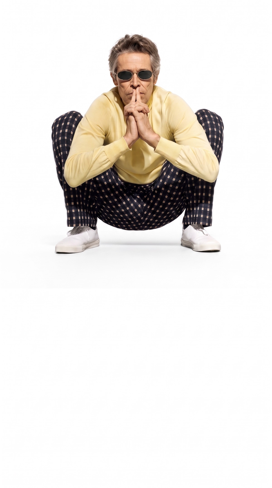
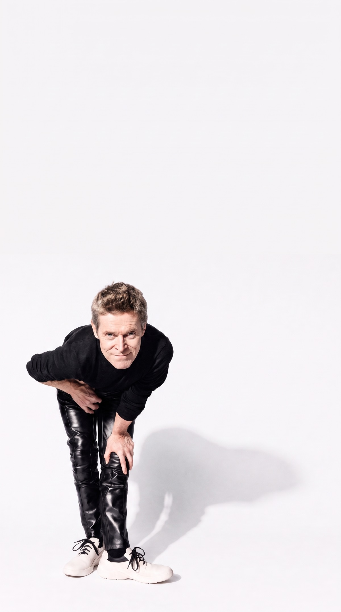
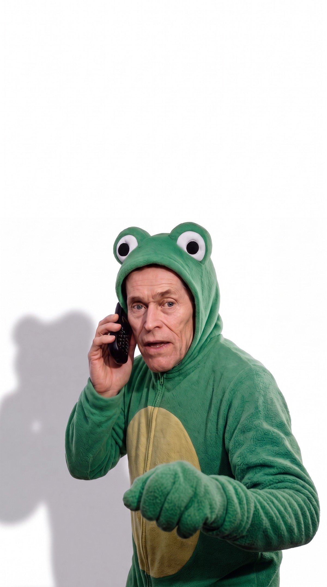
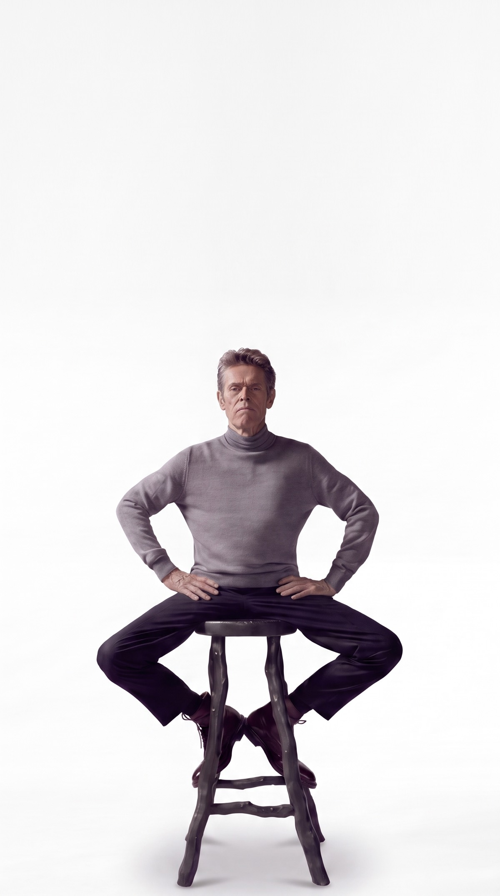

Patents filed worldwide
Raised across ventures
Industries reshaped
Singular vision

A privately held group building at the edges of applied science — from genomics to energy to defense. Founded on a single conviction: the future is not predicted, it is manufactured.

He doesn't enter markets. He rewrites the terms on which they exist.

